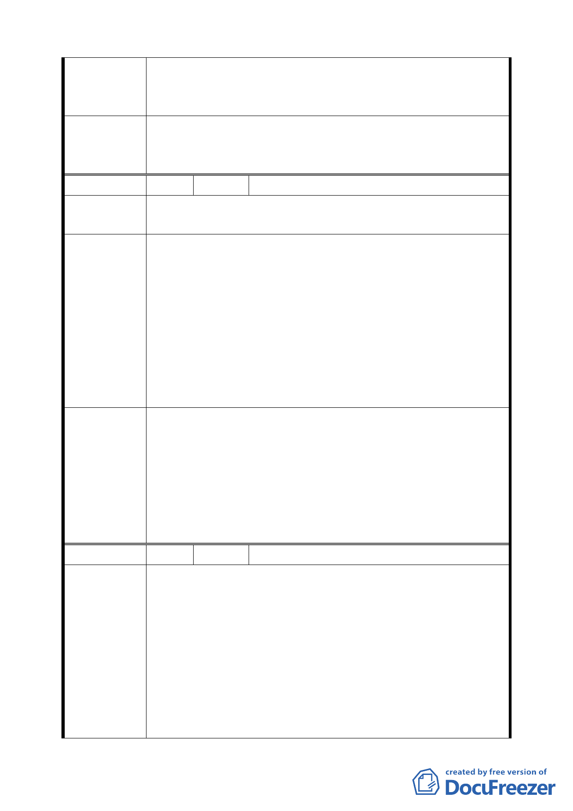

段 43、43-1、45 及 45-l 等 4 筆地號(原 C6、C7、C8、C9
街廓)商業區(供商務設施使用)細部計畫」案細部計畫書一
份，尚祈參酌惠予協助辦理。
同意發展局所提說明與修正：「C6~C9 街廓計畫道路調整一
委 員會決 議 節，中國信託公司已依都市計畫法第 24 條規定申請細部計畫
變更，將予另案辦理」。
編 號 13 陳情人 世正開發股份有限公司
陳 情 理 由 本案「都市設計要點」第十五條廣告招牌設置原則部份，擬
提案建議修改第三款部分規定。
建議修正條文：
第三項：沿 2-1 號、2-2 號、2-3 號兩側廣告物、廣告旗幟及
招牌不得突出建築牆面線，設置高度不得超過建築
建議辦法
物二樓板量起 1 公尺，離地淨高不得低於 3 公尺，
廣告招牌淨高度不得大於 2.5 公尺，且不得設置霓
虹閃光裝置，並建議結合時段性專用人行步道景觀
燈具設置。
第六項：本地區建築物屋頂不得設置任何作為廣告物或霓虹
閃光燈等之雜項工作物。
同意發展局所提說明與修正：
1.依道路層級與本市都市設計審議案例原則修正商業區及工
業區廣告招牌設置應以整體規劃設置為原則，並經本市都
委員會決議 市設計及土地使用開發許可審議委員會審議通過後，始得
設置，以確保整體環境美觀與園區意象。
2.增訂商業區整體街廓開發者得設置薄膜廣告面積不得超過
各向立面之 50%。
編 號 14 陳情人 莊琮博等 2 人
1.「Ｃ2 商業區（供觀光旅館使用）」部分：
依本通檢草案，希望將商業區回歸台北市土地使用分區管
制規則第三種商業區使用組別的管理，且都市計畫的控管
須考量市場運作機制，若控管嚴格背離市場趨勢，將造成
陳 情 理 由 業者未來違規使用的問題，恐衍生更多使用上管理的社會
成本。
2.「Ｃ3 商業區（供商業娛樂設施使用）」部分：
依本通檢草案，希望將商業區回歸台北市土地使用分區管
制規則第三種商業區使用組別的管理，且都市計畫的控管
25